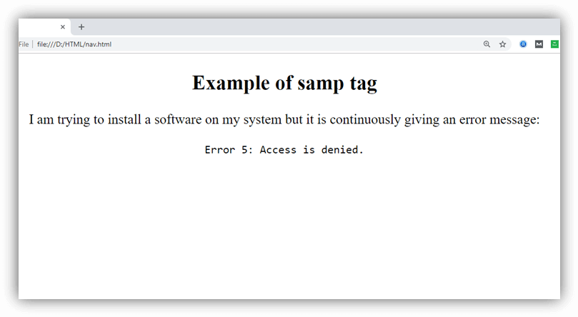

Tags HTML
Las etiquetas HTML son bloques de código que dan formato, funcionalidad y estructura al contenido de las páginas web. Estos fragmentos sirven como indicadores o instrucciones para que un navegador muestre de forma adecuada la información contenida en tus documentos.

las etiquetas HTML h1, h2, h3, h4, h5, y h6 se utilizan para crear encabezados de distintos niveles en una página web. Cada uno de estos elementos tiene un tamaño de fuente y un nivel de importancia específico, donde h1 es el encabezado más importante y h6 el menos importante.
Ejemplo:
h1: Este es el Título Principal
h2: Subtítulo Importante
h3: Subtítulo Menos Importante
h4: Subtítulo de Nivel 4
h5: Subtítulo de Nivel 5
h:6 Subtítulo de Nivel 6
La etiqueta HTML blockquote se utiliza para representar un bloque de texto que es una cita o extracto de otro recurso, como un libro, un artículo, una entrevista, etc. Es una manera de destacar y dar formato especial a las citas dentro de una página web. Por lo general, el texto dentro de un blockquotese muestra con un sangrado en ambos lados y a menudo se muestra en una fuente diferente para distinguirlo del texto circundante.
Ejemplo:
/blockquoteblockquote: Este es el texto citado. Puede ser una cita larga o corta.
La etiqueta HTML pre se utiliza para representar texto preformateado o texto con formato fijo en una página web. El contenido dentro de una etiqueta pre se muestra exactamente como está escrito, incluyendo espacios en blanco, saltos de línea y caracteres especiales. Esta etiqueta es útil cuando necesitas mostrar código fuente, texto con formato específico, o cualquier otro contenido en el que la estructura y los espacios en blanco son importantes.
Ejemplo:
pre: function saludar() {
console.log("¡Hola, mundo!");
}
/pre
En este ejemplo, el contenido dentro de la etiqueta pre se muestra con el formato exacto, incluyendo los espacios en blanco y los saltos de línea. Es útil cuando deseas mostrar código fuente, como en este caso, o cualquier otro contenido que deba mantener su formato original.
La etiqueta HTML figure se utiliza para agrupar contenido relacionado, como imágenes, gráficos, diagramas, ilustraciones o cualquier otro elemento multimedia, junto con su respectiva descripción. La etiqueta figure permite asociar una descripción a un elemento multimedia, lo que es especialmente útil para la accesibilidad y para proporcionar contexto al contenido visual.
La etiqueta HTML figcaption> se utiliza para proporcionar una descripción o una leyenda a un elemento multimedia o contenido agrupado dentro de una etiqueta figure>. Esta etiqueta se utiliza principalmente para agregar contexto o información adicional sobre el contenido visual o multimedia que se encuentra dentro del elemento figure>.
Ejemplo:
En este ejemplo, hemos utilizado la etiqueta figure para envolver una imagen. La imagen se muestra con la etiqueta img, y la descripción de la imagen se proporciona mediante la etiqueta figcaption. La etiqueta figcaption está anidada dentro de la etiqueta figure, y proporciona una descripción del contenido visual.
La etiqueta HTML main se utiliza para marcar el contenido principal de un documento HTML. Esta etiqueta se introdujo en HTML5 y es especialmente útil para mejorar la accesibilidad y la estructura de una página web. Al usar la etiqueta main>, estás indicando claramente cuál es el contenido principal de tu página, lo que puede ser útil para los motores de búsqueda, lectores de pantalla y desarrolladores web que trabajan en el mantenimiento de la página.
Ejemplo:Este es el contenido principal de la página. Aquí se encuentra la información más relevante y el foco de la página.Contenido Principal
La etiqueta HTML section se utiliza para definir una sección temática o agrupar contenido relacionado en un documento HTML. Esta etiqueta se emplea para ayudar a estructurar el contenido de una página web de manera semántica, dividiendo el contenido en secciones lógicas. Cada sección suele contener un encabezado descriptivo que describe su contenido. La etiqueta section> es útil para facilitar la navegación, la accesibilidad y el estilo CSS.
La etiqueta HTML article se utiliza para marcar un contenido independiente y autónomo en un documento HTML. Un artículo es un contenido que puede existir por sí mismo y que es lógicamente independiente del resto del documento. Puede ser un artículo de noticias, un blog, una publicación en un foro o cualquier otro contenido que sea completo por sí mismo. Usar la etiqueta article ayuda a estructurar el contenido de una página web de manera semántica, lo que puede ser beneficioso para motores de búsqueda y lectores de pantalla.
La etiqueta HTML header se utiliza para definir una sección de encabezado en un documento HTML. Esta sección de encabezado generalmente contiene elementos que proporcionan información introductoria o de navegación para el contenido de la página. El contenido dentro de la etiqueta header suele incluir el logotipo del sitio, el título de la página, enlaces de navegación principales u otros elementos que se deseen destacar en la parte superior de la página web.
La etiqueta HTML footer se utiliza para definir una sección de pie de página en un documento HTML. El pie de página generalmente contiene información que se considera relevante para el contenido de la página, pero que se encuentra en la parte inferior de la misma. El contenido típico de un pie de página puede incluir información de contacto, derechos de autor, enlaces a páginas relacionadas, referencias, información de atribución, etc.
La etiqueta HTML aside se utiliza para marcar contenido secundario o relacionado en un documento HTML. El contenido dentro de la etiqueta aside se considera información que es tangencial o complementaria al contenido principal del documento. Esto puede incluir elementos como barras laterales, anuncios, notas aclaratorias, enlaces relacionados o cualquier otro contenido que, aunque esté relacionado con el contenido principal, no es esencial para comprenderlo.
El propósito principal de la etiqueta aside es ayudar a estructurar el contenido de la página de manera más semántica y facilitar la navegación y la comprensión del contenido para los usuarios y los motores de búsqueda.
La etiqueta HTML nav se utiliza para marcar una sección de navegación en un documento HTML. Esta sección de navegación generalmente contiene enlaces o elementos que permiten a los usuarios navegar por diferentes partes del sitio web, como enlaces a otras páginas, secciones importantes, menús de navegación, barras de navegación, etc.
Ejemplo:
La etiqueta HTML dfn> se utiliza para marcar una instancia de un término que se está definiendo o explicando dentro del texto. El propósito principal de dfn es proporcionar una forma semántica de indicar que un término en el texto tiene una definición específica en el contexto de la página web.
Ejemplo:
La etiqueta HTML u se utilizaba tradicionalmente para subrayar el texto en una página web, lo que indicaba que ese texto era un enlace o que tenía algún otro tipo de importancia o énfasis. Sin embargo, en la especificación HTML5, el elemento u ha sido redefinido y se desaconseja su uso para subrayar texto no relacionado con enlaces o para resaltar énfasis, ya que HTML5 proporciona elementos más apropiados para estos propósitos.
La etiqueta HTML small se utiliza para definir un fragmento de texto que debe presentarse en un tamaño de fuente más pequeño que el texto circundante. Se utiliza comúnmente para representar texto que es menos relevante o menos importante en comparación con el texto principal de un párrafo o una sección de contenido.
Ejemplo:Small: Este es un breve ejemplo del uso de la etiqueta small y lo pequeña en comparacion del resto de la línea
La etiqueta HTML div (abreviatura de "division") se utiliza para crear un contenedor genérico o un bloque de división en una página web. No proporciona ningún formato o estilo específico por sí misma, pero se utiliza para agrupar y estructurar elementos HTML dentro de un bloque o contenedor común. El propósito principal de la etiqueta div es permitir la organización y el diseño de la página web mediante la creación de secciones o áreas de contenido que pueden ser estilizadas y manipuladas mediante CSS o JavaScript. Los elementos HTML, como párrafos, encabezados, imágenes, enlaces y otros, se pueden colocar dentro de un div> para crear secciones específicas de contenido.
Ejemplo:
La etiqueta HTML code se utiliza para marcar fragmentos de código dentro de un documento HTML. Su propósito principal es indicar que el contenido encerrado en code representa código fuente o un fragmento de código, y normalmente se muestra en un tipo de fuente mono-espaciada (como Courier) para distinguirlo del texto normal.
El uso de la etiqueta code es útil en varios contextos, como:
- Mostrar ejemplos de código fuente.
- Resaltar comandos o instrucciones en tutoriales técnicos o de programación.
- Presentar código en documentación técnica.
- Marcar datos o valores literales que deben ser copiados literalmente.
- Indicar nombres de variables, funciones o identificadores en un texto.
Para imprimir un mensaje en JavaScript, utiliza code:console.log('Hola, mundo');/code.
La etiqueta HTML samp> es una etiqueta de formato de texto que se utiliza para representar la salida de un programa de computadora o la entrada del usuario. Cuando se usa la etiqueta samp>, el texto dentro de ella se mostrará en un tipo de letra monoespaciado, típicamente con un fondo gris claro en la mayoría de los navegadores web.
Ejemplo:Aqui se ilustra la etiqueta de html samp como : Error 5: Acces is denied
La etiqueta kbd> se usa para indicar que el texto que contiene es una entrada de teclado, un comando o una abreviatura.
típicamente con un fondo gris claro en la mayoría de los navegadores web. Ejemplo: